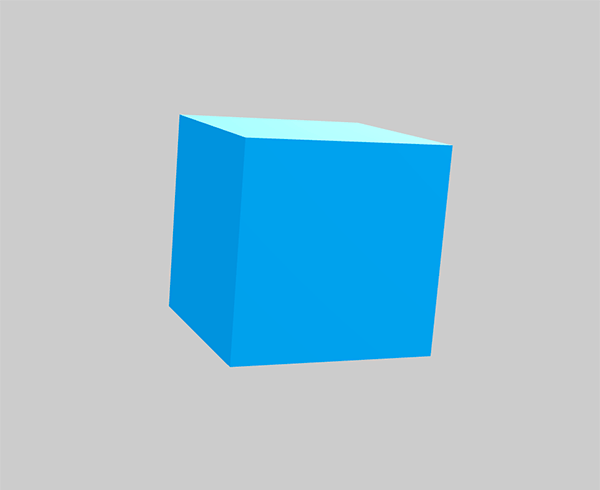

Babylon.js is one of the most popular 3D game engines used by developers. As with any other 3D library it provides built-in functions to help you implement common 3D functionality more quickly. In this article we'll take you through the real basics of using Babylon.js, including setting up a development environment, structuring the necessary HTML, and writing the JavaScript code.
We will try to create a simple demo first — a cube rendered on the screen. If you have already worked through our Building up a basic demo series with Three.js, PlayCanvas or A-Frame (or you are familiar with other 3D libraries) you'll notice that Babylon.js works on similar concepts: camera, light and objects.
Environment setup
To start developing with Babylon.js, you don't need much. You should start off by:
- Making sure you are using a modern browser with good WebGL support, such as the latest Firefox or Chrome.
- Creating a directory to store your experiments in.
- Saving a copy of the latest Babylon.js engine inside your directory.
- Opening the Babylon.js documentation in a separate tab — it is useful to refer to.
HTML structure
Here's the HTML structure we will use:
<!DOCTYPE html>
<html>
<head>
<meta charset="utf-8">
<title>MDN Games: Babylon.js demo</title>
<style>
html,body,canvas { margin: 0; padding: 0; width: 100%; height: 100%; font-size: 0; }
</style>
</head>
<body>
<script src="babylon.js"></script>
<canvas id="render-canvas"></canvas>
<script>
var canvas = document.getElementById("render-canvas");
/* all our JavaScript code goes here */
</script>
</body>
</html>
It contains some basic information like the document <title>, and some CSS to set the width and height of the <canvas> element (which Babylon.js will use to render the content on) to fill the entire available viewport space. The first <script> element includes the Babylon.js library in the page; we will write our example code in the second one. There is one helper variable already included, which will store a reference to the <canvas> element.
Before reading on, copy this code to a new text file and save it in your working directory as index.html.
Initialising the Babylon.js engine
We have to create a Babylon.js engine instance first (passing it the <canvas> element to render on) before we start developing our game. Add the following code to the bottom of your second <script> element:
var engine = new BABYLON.Engine(canvas);
The BABYLON global object contains all the Babylon.js functions available in the engine.
Creating a scene
A scene is the place where all the game content is displayed. While creating new objects in the demo, we will be adding them all to the scene to make them visible on the screen. Let's create a scene by adding the following lines just below our previous code:
var scene = new BABYLON.Scene(engine); scene.clearColor = new BABYLON.Color3(0.8, 0.8, 0.8);
Thus, the scene is created and the second line sets the background color to light gray.
Creating a rendering loop
To make the scene actually visible we have to render it. Add these lines at the end of the <script> element, just before the closing </script>.
var renderLoop = function () {
scene.render();
};
engine.runRenderLoop(renderLoop);
We're using the engine's runRenderLoop() method to execute the renderLoop() function repeatedly on every frame — the loop will continue to render indefinitely until told to stop.
Creating a camera
Now the setup code is in place we need to think about implementing the standard scene components: camera, light and objects. Let's start with the camera — add this line to your code below the scene creation and the line where we defined the clearColor.
var camera = new BABYLON.FreeCamera("camera", new BABYLON.Vector3(0, 0, -10), scene);
There are many cameras available in Babylon.js; FreeCamera is the most basic and universal one. To initialize it you need to pass it three parameters: any name you want to use for it, the coordinates where you want it to be positioned in the 3D space, and the scene you want to add it to.
Note: You probably noticed the BABYLON.Vector3() method in use here — this defines a 3D position on the scene. Babylon.js is bundled with a complete math library for handling vectors, colors, matrices etc.
Let there be light
There are various light sources available in Babylon.js. The most basic one is the PointLight, which works like a flashlight — shining a spotlight in a given direction. Add the following line below your camera definition:
var light = new BABYLON.PointLight("light", new BABYLON.Vector3(10, 10, 0), scene);
The parameters are very similar to the previously defined camera: the name of the light, a position in 3D space and the scene to which the light is added.
Geometry
Now the scene is properly rendering we can start adding 3D shapes to it. To speed up development Babylon.js provides a bunch of predefined primitives that you can use to create shapes instantly in a single line of code. There are cubes, spheres, cylinders and more complicated shapes available. Let's start by defining the geometry for a box shape — add the following new code below your previous additions:
var box = BABYLON.Mesh.CreateBox("box", 2, scene);
A mesh is a way the engine creates geometric shapes, so material can be easily applied to them later on. In this case we're creating a box using the Mesh.CreateBox method with it's own name, a size of 2, and a declaration of which scene we want it added to.
Note: The size or position values (e.g. for the box size) are unitless, and can basically be anything you deem suitable for your scene — milimeters, meters, feet, or miles — it's up to you.
If you save and refresh now, your object will look like a square, because it's facing the camera. The good thing about objects is that we can move them on the scene however we want, for example rotating and scaling. Let's apply a little bit of rotation to the box, so we can see more than one face — again, add these lines below the previous one:
box.rotation.x = -0.2; box.rotation.y = -0.4;
The box looks black at the moment, because we haven't defined any material to apply to its faces. Let's deal with that next.
Material
Material is that thing covering the object — the colors or texture on its surface. In our case we will use a simple blue color to paint our box. There are many types of materials that can be used, but for now the standard one should be enough for us. Add these lines below the previous ones:
var boxMaterial = new BABYLON.StandardMaterial("material", scene);
boxMaterial.emissiveColor = new BABYLON.Color3(0, 0.58, 0.86);
box.material = boxMaterial;
The StandardMaterial takes two parameters: a name, and the scene you want to add it to. The second line defines an emissiveColor — the one that will be visible for us. We can use the built-in Color3 function to define it. The third line assigns the newly created material to our box.
Congratulations, you've created your first object in a 3D environment using Babylon.js! It was easier than you thought, right? Here's how it should look:

And here's the code we have created so far:
You can also check it out on GitHub.
More shapes
We have a box on the scene already; now let's try adding more shapes.
Torus
Let's try adding a torus — add the following lines below the previous code:
var torus = BABYLON.Mesh.CreateTorus("torus", 2, 0.5, 15, scene);
torus.position.x = -5;
torus.rotation.x = 1.5;
This will create a torus and add it to the scene; the parameters are: name, diameter, thickness, tessellation (number of segments) and the scene to add it to. We also position it a bit to the left and rotate it on the x axis so it can be seen better. Now let's add a material:
var torusMaterial = new BABYLON.StandardMaterial("material", scene);
torusMaterial.emissiveColor = new BABYLON.Color3(0.4, 0.4, 0.4);
torus.material = torusMaterial;
It looks similar to the box element — we're creating the standard material, giving it a grayish color and assigning it to the torus.
Cylinder
Creating a cylinder and its material is done in almost exacly the same way as we did for the torus. Add the following code, again at the bottom of your script:
var cylinder = BABYLON.Mesh.CreateCylinder("cylinder", 2, 2, 2, 12, 1, scene);
cylinder.position.x = 5;
cylinder.rotation.x = -0.2;
var cylinderMaterial = new BABYLON.StandardMaterial("material", scene);
cylinderMaterial.emissiveColor = new BABYLON.Color3(1, 0.58, 0);
cylinder.material = cylinderMaterial;
The cylinder parameters are: name, height, diameter at the top, diameter at the bottom, tessellation, height subdivisions and the scene to add it to. It is then positioned to the right of the cube, rotated a bit so its 3D shape can be seen, and given a yellow material.
Here's how the scene should look right now:

This works, but it is a bit boring. In a game something is usually happening — we can see animations and such — so let's try to breathe a little life into those shapes by animating them.
Animation
We already used position and rotation to adjust the position of the shapes; we could also scale them. To show actual animation, we need to make changes to these values inside the rendering loop at the end of our code, so they are updated on every frame. Define a helper variable — t — that we will use for animations, just before the renderLoop, and decrement it on every frame inside the loop, like this:
var t = 0;
var renderLoop = function () {
scene.render();
t -= 0.01;
// animation code goes here
};
engine.runRenderLoop(renderLoop);
The t variable will be incremented on every rendered frame.
Rotation
Applying rotation is as easy as adding this line at the end of the renderLoop function:
box.rotation.y = t*2;
It will rotate the box along the y axis.
Scaling
Add this line below the previous one to scale the torus:
torus.scaling.z = Math.abs(Math.sin(t*2))+0.5;
There's a little bit of adjustment made to make the animation look and feel nice. You can experiment with the values and see how it affects the animation.
Moving
By changing the position of the cylinder directly we can move it on the scene — add this line below the previous one:
cylinder.position.y = Math.sin(t*3);
The cylinder will float up and down on the y axis thanks to the Math.sin() function.
Conclusion
Here's the final code listing, along with a viewable live example:
You can also see it on GitHub and fork the repository if you want to play with it yourself locally. Now you know the basics of Babylon.js engine; happy experimentation!